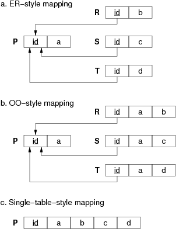
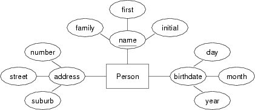

| COMP3311 23T1 |
Week 03 ER→Rel Mapping, SQL DDL, ER→SQL Mapping |
Database Systems |
- We have suggested that all tables derived from entities should have pluralised names (e.g Student in ER, Student in relational box-and-arrows, Students in SQL). Our examples and solutions don't always do this.
- We have suggested not using all upper-case for SQL keywords. Many of our solutions use upper-case keywords.
- We have suggested that primary and foreign keys always be defined after the attributes, despite the fact that there are more compact ways of defining them. We sometimes use the compact versions of key definitions.
-
Why is it useful to first do an ER design and then convert this into a relational schema?
Answer:
Because ...- allows the designer to initially concentrate on an abstract view of data
- allows the designer to initially concentrate on an abstract view of relationships
- no need to initially worry about concrete representation details
- no need to initially worry about fine-grained details of constraints
- the
structural
parts of the mapping are straightforward - new information (concrete data types, constraints, FKs) must be added
for the relational model, but this is easier if other design work already done
-
Convert each of the following ER design fragments into a relational data model expressed as a box-and-arrow diagram:
Answer:
Relational models for the three Teacher-Teaches-Subject scenarios:
In (a), we implement the relationship via a foreign key in the relation that has only one associated entity.
In (c), we place the foreign key in the relation that totally participates in the relationship, so as to minimise wasted space.
-
-
In the mapping from the ER model to the relational model, there are three different ways to map class hierarchies (ER, OO, single-table). Show each of them by giving the mapping for the following class hierarchy:
Use box-and-arrow diagrams for the relational models.
Answer:
Relational mappings for a class hierarchy:
Note: the arrows show how the foreign keys in the relations R, S, T reference the primary key id attribute in relation P.
-
Now consider a variation on the above class hierarchy where the sub-classes are disjoint. Show the three possible mappings for the class hierarchy and discuss how effectively they represent the semantics of the disjoint sub-classes:

Use box-and-arrow diagrams for the relational models.
Answer:
Relational mappings for a class hierarchy:
Note: the ER and OO mappings cannot represent the disjoint constraint. There is nothing in the data model to prevent an object occurring in multiple sub-classes. In the single-table mapping, however, we can add an extra attribute which indicates which sub-class each tuple belongs to; this forces each tuple to belong to just a single sub-class. However, this still doesn't prevent a tuple from e.g. containing a value for attribute b when it also has a value of 'S' for the subClass attribute. In SQL, we can write table constraints to prevent such situations. Preventing sub-class overlap in the ER or OO models in SQL requires us to use global constraints, typically implemented as triggers.
-
Consider the following two relation definitions:
Answer:
-- preferred approach create table R ( id integer, name text, address text, d_o_b date, primary key (id) ); -- possible approach create table R ( id integer primary key, name text, address text, d_o_b date );
-- only possible approach create table S ( name text, address text, d_o_b date, primary key (name,address) );
-
Give examples of constraints that
- apply to an individual attribute
- apply across a whole table
- apply between tables
Answer:
- any constaint on the value that an attribute can take, e.g.
x integer check (x > 0) d date check (t between '2020-01-01' and '2022-12-31') y integer not null
- a constraint requiring consideration of all tuples in the table, e.g.
id integer primary key z integer unique
- foreign keys indicate that a value in attribute must appear as a value of a corresponding attribute in another table, e.g.
create table R ( x integer primary key, y float ); create table S ( a integer primary key, b integer references R(a) );
-
What is the difference between the following two ways to define a primary key?
create table R ( create table R ( a integer primary key, a integer, b integer, b integer, ... ... ); primary key (a) );Answer:
No difference for a single attribute primary key (as above).
But you cannot define a multi-attribute primary key inline, e.g.
-- this does not work -- define it like this create table R ( create table R ( a integer primary key, a integer, b integer primary key, b integer, ... ... ); primary key (a,b) ); -
Discuss suitable SQL representations for each of the following attributes, including additional domain constraints where relevant:
-
people's names
Answer:
How to represent names, depends on how they're going to be used. If we need to sort people by family name, then we'd either need to store them as a single string in the format
"familyName,givenNames"or stored as two separate attributes, one for each component of the name. If stored as a single string,varchar(40)would be ok to hold all but the longest human names. If stored as two separate strings, each individual component would probably need to hold up to 30 characters, e.g.givenName varchar(30), familyNames varchar(30),
In some contexts, you might even want to store two versions of the name: the official one (perhaps as above), and another one which gives a single string to tell how the user would like their name to appear when displayed, e.g.showname varchar(50),
(to avoid those horrible middle names that you don't want anybody to know about :-) -
addresses
Answer:
As for names, addresses could be broken into components such as street, town, state, country, postal-code, e.g.
street varchar(30), town varchar(30), state varchar(30), country varchar(30),
or simply done as a single string, but longer than a person's name.address varchar(80),
Ifcountrywas available as a separate table (which may be plausible in some contexts), then a foreign key reference to a country identifier could be used.street varchar(30), town varchar(30), state varchar(30), country integer references Country(id),
-
ages
Answer:
It is probably better to use date-of-birth rather than age. Why? because age changes over time, while date-of-birth is fixed and there are typically operations available to compute age, given the date-of-birth. However, if anyone was to insist on having an age attribute, then it would be useful to use an integer value with additional common-sense constraints, e.g.
age integer check (age > 0 and age < 150)
-
dollar values
Answer:
For monetary values, we typically need (for display, at least), an arbtrary number of total digits, with two digits after the decimal point. In SQL, this could be done as:
value numeric(20,2),
Alternatively, it could simply be represented as a floating point number, e.g.value float,
Some database systems (e.g. PostgreSQL) have special (non-standard) types for handling monetary values, e.g.value money,
Values of this type are essentially floating point numbers with the additional property that they can be read and written using a format like$1234.56If some application did not want to allow negative monetary values, it would need to add an additional constraint to enforce this:
value money check (value >= 0.00)
-
masses of material
Answer:
Generally, a floating point value would be the most suitable. Since you cannot have negative mass, it would be useful to add an additional constraint. It is also useful to document the units of measurement, although this can only be done as an SQL comment, e.g.
quantity float check (quantity >= 0.0) -- kilos
-
-
In many real PostgreSQL schemas, you will see definitions like
create table R ( id serial, name text, d_o_b date, ... primary key (id) );- What is the effect of the serial declaration?
- How would you make use of it when inserting tuples?
- How would you reference R.id as a foreign key?
Answer:
-
It creates an integer attribute and a sequence. The sequence generates, suprise, a sequence of consecutive (unique) integer values. Every time you insert a new tuple and don't give a value for the id attribute, the sequence supplies a new one and increments itself.
-
You need to use the returning clause to capture the generated value, e.g.
insert into R(name,d_o_b) values ('John','1972-02-28') returning id; -
Since the serial attribute contains an integer value, you would reference it as e.g.
fk integer references R(id)
Defining the fk attribute as serial actually works, but generates a useless sequence as a side-effect.
-
Convert the following entity into an SQL CREATE TABLE definition:
Give reasons for all choices of domain types.
Answer:
Convert CompanyListing entity into an SQL CREATE TABLE definition:CREATE TABLE CompanyListing ( name char(4) PRIMARY KEY, sharePrice numeric(6,2), netWorth numeric(20,2) );
Stock-market listings typically use 3-4 character abbreviations for company names, so a fixed-length character string is ok. Since share prices are money values, using numeric values with two decimal places (for cents) would be suitable. Individual share prices are rarely more than $1000.00, so we use a field with 6 digits, including 2 decimal places. The nett worth of a listed company is likely to be very large, so we allow for up to 20 digits. Note that both of these allow only integer values of cents. Since the stock market probably requires more precision, then a
floatvalue (or allowing more digits after the decimal point) might be more appropriate. PostgreSQL provides amoneydata type which uses floating point and has the added advantage of displaying the field in a format like$999.99 -
Convert the following entity into an SQL CREATE TABLE definition:

Give reasons for all choices of domain types.
Answer:
Convert Person entity into SQL CREATE TABLE definition:CREATE TABLE Person ( familyName varchar(30), givenName varchar(30), initial char(1), streetNumber integer, streetName varchar(40), suburb varchar(40), birthday date, PRIMARY KEY (familyName,givenName,initial) );
The choice of a three-part name is tricky. The family-name and given-name parts are pretty much as described above. However, the initial creates a problem. It is part of the key, and so the above definition requires it to be provided, even though not everyone is going to have a middle initial. It ought to remain part of the key, however, so that we can distinguish between people called
John A. Smith
andJohn B. Smith
. Since no part of the key is allowed to be NULL, we need to adopt some convention for people with no initials; a plausible approach would to use a single space character (i.e. ' '). If we need to deal with addresses like1a Smith Street
, then we'd need to change thenumberattribute to a string type. Since all DBMSs have a date type, along with functions for extracting the components, we may as well collapse the components of the birthday attribute into a single field of date type. -
Convert the following ER design into a relational data model:
You can assume that each attributes contains (at least) a suitably-named attribute containing a unique identifying number (e.g. the Lecturer entity contains a LecID attribute).
Answer:
Relational models for very small University ER model:
-
Convert the following ER design into an SQL schema:
Which elements of the ER design do not appear in the relational version?
Answer:
Supplier/Parts ER design expressed as an SQL schema:
CREATE TABLE Supplier ( name varchar(50), city varchar(50), PRIMARY KEY (name) ); create TABLE Part ( number integer, colour varchar(20), PRIMARY KEY (number) ); CREATE TABLE Supply ( supplier varchar(50), part integer, quantity integer, PRIMARY KEY (supplier,part), FOREIGN KEY (supplier) REFERENCES Supplier(name), FOREIGN KEY (part) REFERENCES Part(number) );In this example, we write all constraints at the table level. In subsequent examples, we write constraints in a more compact form.
Which elements of the E/R design do not appear in the relational version?
All of the elements appear. The translation is a straightforward mapping because we have an N:M relationship. Each entity becomes a table; the relationship becomes a table. Attributes in the ER model become attributes in the relational model. The only information we need to add are specific domain definitions for the attributes; we've chosen
reasonable
domains. -
Convert the following ER design into a relational data model expressed first as a box-and-arrow diagram and then as a sequence of statements in the SQL data definition language:

Which elements of the ER design do not appear in the relational version?
Answer:
Relational design for Person-Car-Accident
Box-and-arrow version:
SQL Schema:
CREATE TABLE People ( licenceNo integer PRIMARY KEY, name varchar(40), address varchar(60) ); CREATE TABLE Cars ( registrationNo char(6) PRIMARY KEY, -- e.g. "ABC123" model varchar(20), year integer ); CREATE TABLE Accidents ( reportNo integer PRIMARY KEY, happenedAt date, location varchar(60) ); CREATE TABLE Owns person integer REFERENCES People(licenceNo), car char(6) REFERENCES Cars(registrationNo), PRIMARY KEY (person,car) ); CREATE TABLE Involved ( accident integer REFERENCES Accidents(reportNo), person integer REFERENCES People(licenceNo), car char(6) REFERENCES Cars(registrationNo), damage money, PRIMARY KEY (accident,person,car) );Which elements of the E/R design do not appear in the relational version?
At a syntactic level, all of entities, relationships and attributes are explicitly represented in the relational schema. At a semantic level, the total participation constraints on
PersonandCarin theOwnsrelation are not represented, so that there could be people in the database who do not own a car, and cars that are not owned by anyone.Note that it is not possible to express these constraints in standard SQL. They would need to be implemented by e.g. stored trigger procedures.
-
[Based on GUW 2.1.3] Convert the following ER design into a relational data model expressed first as a box-and-arrow diagram and then as a sequence of statements in the SQL data definition language:

Which elements of the ER design do not appear in the relational version?
Answer:
[Based on GUW 2.1.3] Relational design for Teams-Players-Fans
Box-and-arrow version:
SQL schema:
We use plural-ised names for tables
CREATE TABLE Teams ( name varchar(50) PRIMARY KEY, captain varchar(40) NOT NULL REFERENCES Players(name) ); CREATE TABLE Players ( name varchar(40) PRIMARY KEY, team varchar(50) NOT NULL REFERENCES Teams(name) ); CREATE TABLE Fans ( name varchar(40) PRIMARY KEY, ); CREATE TABLE TeamColours ( team varchar(50) REFERENCES Teams(name), colour varchar(30), PRIMARY KEY (team,colour) ); CREATE TABLE FavTeams ( fan varchar(50) REFERENCES Fans(name), team varchar(50) REFERENCES Teams(name), PRIMARY KEY (fan,team) ); CREATE TABLE FavPlayers ( fan varchar(50) REFERENCES Fans(name), player varchar(50) REFERENCES Players(name), PRIMARY KEY (fan,player) ); CREATE TABLE FavColours ( fan varchar(50) REFERENCES Fans(name), colour varchar(30), PRIMARY KEY (fan,colour) );
Which elements of the E/R design do not appear in the relational version?
At a syntactic level, the multi-valued attributes from the E/R design do not appear directly in the relational model, but are replaced by tuples in the
TeamColoursandFavColourstables.At a semantic level, it doesn't capture the total participation of the
Teamentity in thePlaysForrelationship. While all players have to play for a team, the diagram does not enforce that each team must have at least one player who plays for it (except indirectly via the fact that it has to have a captain).It also doesn't require that a team has at least one colour or that a fan has any favourite colours. Of course, the E/R diagram doesn't imply this either (non-key attributes are not required to have a value), but if it did state this, the relational model as given could not capture it.
The above SQL schema is simple, but doesn't actually load because of the mutual interdependence of Player and Team. To fix this, you would need something like the following:
-- create Team without the foreign key and then add it once Player exists CREATE TABLE Teams ( name varchar(50) PRIMARY KEY, captain varchar(40) NOT NULL ); CREATE TABLE Players ( name varchar(40) PRIMARY KEY, team varchar(50) NOT NULL REFERENCES Teams(name) ); ALTER TABLE Teams ADD FOREIGN KEY (captain) REFERENCES Players(name); -- alternatively, move the captain foreign key to the Player table -- which is allowed because it's a 1:1 mapping -- this isn't as efficient because players who are not captain will -- have a null value for the captain foreign key CREATE TABLE Team ( name varchar(50) PRIMARY KEY ); CREATE TABLE Player ( name varchar(40) PRIMARY KEY, team varchar(50) NOT NULL REFERENCES Teams(name) captain varchar(50) REFERENCES Teams(name) );
-
Convert the following ER design into a relational data model expressed first as a box-and-arrow diagram and then as a sequence of statements in the SQL data definition language:
Which elements of the ER design do not appear in the relational version?
Answer:
Relational design for Trucking CompanyBox-and-arrow version:
SQL schema:
CREATE TABLE Truck ( truckNo integer PRIMARY KEY, maxVolume float, maxWeight float ); CREATE TABLE Trip ( tripNo integer PRIMARY KEY, tripDate date, truck integer REFERENCES Truck(truckNo) ); CREATE TABLE Store ( address varchar(60) PRIMARY KEY, storeName varchar(50) ); CREATE TABLE Warehouse ( location varchar(60) PRIMARY KEY ); CREATE TABLE Shipment ( shipmentNo integer PRIMARY KEY, volume float, weight float, trip integer REFERENCES Trip(tripNo), store varchar(60) REFERENCES Store(address) ); CREATE TABLE Source ( trip integer REFERENCES Trip(tripNo), warehouse varchar(60) REFERENCES Warehouse(location), PRIMARY KEY (trip,warehouse) );
Which elements of the E/R design do not appear in the relational version?
At a syntactic level, the 1:n relationships (Includes, Uses, Destination) do not appear as tables in the relational model. They are implemented by foreign keys in the table which has only one associated entity.
-
Convert the following ER design to relational form:
Which elements of the ER design do not appear in the relational version?
Answer:
Relational models for company ER model:Box-and-arrows schema:
SQL schema:
create table Employee ( ssn integer, birthdate date, name varchar(50), worksFor varchar(50) not null, primary key (ssn) -- foreign key (worksFor) is added later ); create table Department ( name varchar(50), phone varchar(20), location varchar(30), manager integer not null unique, mdate date, primary key (name), foreign key (manager) references Employee(ssn) ); alter table Employee add foreign key (worksFor) references Department(name); create table Project ( pnum integer, title varchar(100), primary key (pnum) ); create table Dependent ( ssn integer not null, name varchar(50), birthdate date, relation varchar(10) check (relation in ('spouse','child')), primary key (ssn,name), foreign key (ssn) references Employee(ssn) ); create table Participation ( ssn integer, pnum integer, "time" integer, -- number of hours on project primary key (ssn,pnum), foreign key (pnum) references Project(pnum), foreign key (ssn) references Employee(ssn) );The reason why the foreign key constraint is added later is because there is a mutually recursive pair of foreign key references between Employee and Department. We can't add the foreign key reference until the relevant table exists, so we need to create one table first, without the foreign key, add the other table (which refers to the first table), and then add the foreign key reference from the first table to the second table.The not null constraints on Department.manager, Employee.worksFor and Depdendent.ssn implement the total participation requirements from the ER model.
-
Using this version of the Person class hierarchy, from the Medical scenario described previously, convert the ER design to relational form as an SQL schema:
Give mappings using both the ER style and single-table-with-nulls style.Answer:
SQL schemas for the Person class hierarchy in the medical scenario:-- NOTE that these schemas include representations of -- the relationships between various sub-classes of Person -- Using ER-style mapping for subclasses of Person create table Person ( ssn integer, name varchar(50) not null, address varchar(100), primary key (ssn) ); -- subclasses are overlapping; a Person could thus be -- in any combination of the Doctor, Patient or Pharmacist tables create table Doctor ( ssn integer, yearsExp integer, primary key (ssn), foreign key (ssn) references Person(ssn) ); create table Specialties ( doctor integer, specialty varchar(20) check (specialty in ('Feet','Ears','Throat')), primary key (doctor), foreign key (doctor) references Doctor(ssn) ); create table Patient ( ssn integer, birthdate date, primaryPhys integer not null, -- total participation primary key (ssn), foreign key (ssn) references Person(ssn), foreign key (primaryPhys) references Doctor(ssn) ); create table Pharmacist ( ssn integer, phName varchar(30), phAddress varchar(100), qual varchar(30), primary key (ssn), foreign key (ssn) references Person(ssn) -- foreign key (phName,phAddress) is added later ); -- Using single-table-style mapping for subclasses of Person create table Person ( ssn integer, name varchar(50) not null, address varchar(100), -- an Person can belong to any combination of subclasses isPatient boolean, isDoctor boolean, isPharmacist boolean, -- patient-specific attributes primaryPhys integer, -- total participation handled below birthdate date, -- doctor-specific attributes -- ... none ... Specialities are in separate table -- pharmacist-specific attributes phName varchar(30), phAddress varchar(100), qual varchar(30), primary key (ssn), foreign key (primaryPhys) references Person(ssn), -- foreign key (phName,phAddress) is added later -- constraint ClassAttributeCheck ... -- -- trying to write a boolean expression that determines -- -- that there is an appropriate combination of subclass -- -- flags (isX) and attribute values is extremely tedious, -- -- so we don't even bother to try ); -
Convert this ER design for the medical scenario into relational form:
Assume that the Person classes are mapped using the ER-style mapping. Which elements of the ER design do not appear in the relational version?
Answer:
SQL schema for the rest of the medical scenario:Box-and-arrow schema:
SQL Schema:
-- Assume the definitions of Person/Patient/Doctor/Pharmacist -- as given above in the ER-style create table Pharmacy ( name varchar(30), address varchar(100), manager integer not null, -- total participation primary key (name,address), foreign key (manager) references Pharmacist(ssn) ); alter table Pharmacist add foreign key (phName,phAddress) references Pharmacy(name,address); create table Drug ( tradename varchar(40), formula varchar(100), primary key (tradename) ); -- if "treatDate" is date only, and is part of primary key, -- then a doctor cannot treat a patient more than once/day. -- if this is required, make "treatDate" as a timestamp create table Treats ( doctor integer, patient integer, treatDate date, primary key (doctor,patient,treatDate), foreign key (doctor) references Doctor(ssn), foreign key (patient) references Patient(ssn) ); -- if "prescDate" is date only, then cannot prescibe -- the same drug more than once on the same day create table Prescribes ( doctor integer, patient integer, drug varchar(40), prescDate date, quantity integer, -- float if mass/volume/... primary key (doctor,patient,drug,prescDate), foreign key (doctor) references Doctor(ssn), foreign key (patient) references Patient(ssn), foreign key (drug) references Drug(tradename) ); create table SoldIn ( drug varchar(40), phName varchar(30), phAddress varchar(100), price money, primary key (drug,phName,phAddress), foreign key (phName,phAddress) references Pharmacy(name,address), foreign key (drug) references Drug(tradename) );
Which elements of the ER design do not appear in the relational version?
The relational model cannot represent (in standard SQL), the total participation constraints for patients (i.e. every patient must be treated by at least one doctor). This would need to be enforced via e.g. a stored trigger procedure. It also cannot represent the total participation constraint on the relationship WorksFor between pharmacists and pharmacies (i.e. every pharmacy must have at least one pharmacist working in it).
-
Convert this ER design for the book publishing scenario into an SQL schema:
Give two versions, one using the ER-style mapping of subclasses, and the other using single-table-with-nulls mapping of subclasses.
Answer:
SQL schema for book publishing scenario:SQL Schema: using ER-style mapping of subclasses
create domain TaxFileNum as char(11) check (value ~ '^[0-9]{3}-[0-9]{3}-[0-9]{3}$'); create domain ISBNumber as char(15) check (value ~ '^[A-Z][0-9]{3}-[0-9]{4}-[0-9]{5}$'); create domain ABNumber as integer check (value > 100000); create table Publisher ( abn ABNumber, name varchar(60), address varchar(100), primary key (abn) ); create table Person ( tfn TaxFileNum, name varchar(50), address varchar(100), primary key (tfn) ); create table Author ( person TaxFileNum, penname varchar(50), primary key (person), foreign key (person) references Person(tfn) ); create table Editor ( person TaxFileNum, publisher ABNumber not null, primary key (person), foreign key (person) references Person(tfn), foreign key (publisher) references Publisher(abn) ); create table Book ( isbn ISBNumber, title varchar(100), edition integer check (edition > 0), editor TaxFileNum not null, publisher ABNumber not null, primary key (isbn), foreign key (editor) references Editor(person), foreign key (publisher) references Publisher(abn) ); create table Writes ( author TaxFileNum, book ISBNumber, primary key (author,book), foreign key (author) references Author(person), foreign key (book) references Book(isbn) );SQL Schema: using single-table-style mapping of subclasses
-- Uses single-table-style mapping for subclasses of Person create domain TaxFileNum as char(11) check (value ~ '^[0-9]{3}-[0-9]{3}-[0-9]{3}$'); create domain ISBNumber as char(15) check (value ~ '^[A-Z][0-9]{3}-[0-9]{4}-[0-9]{5}$'); create domain ABNumber as integer check (value > 100000); create table Publisher ( abn ABNumber, name varchar(60), address varchar(100), primary key (abn) ); create table Person ( tfn TaxFileNum, name varchar(50), address varchar(100), kind varchar(10) check (kind in ('author','editor')), -- attributes for Authors penname varchar(50), -- attributes for Editors publisher ABNumber not null, primary key (tfn), foreign key (publisher) references Publisher(abn), constraint NoPenNameIfEditor check ((kind = 'author' and publisher is null) or (kind = 'editor' and penname is null)) ); -- Problem with the above: -- * publisher attribute defined to be not null -- * if author type, publisher is required to be null -- * to resolve this, we have to lose one of the constraints -- - either lose total participation of Editor with Publisher -- - or lose check on null poublisher for authors create table Book ( isbn ISBNumber, title varchar(100), edition integer check (edition > 0), editor TaxFileNum not null, publisher ABNumber not null, primary key (isbn), foreign key (editor) references Person(tfn), foreign key (publisher) references Publisher(abn) ); create table Writes ( author TaxFileNum, book ISBNumber, primary key (author,book), foreign key (author) references Person(tfn), foreign key (book) references Book(isbn) );